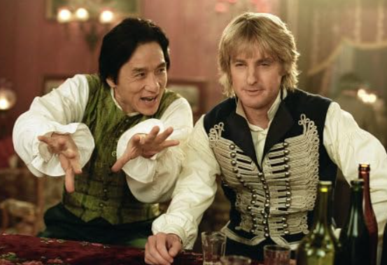
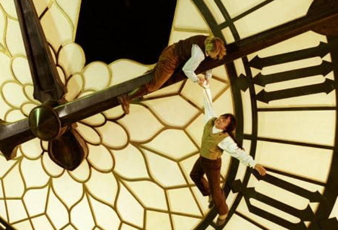

A website on how this filmmaker & actor thrilled Western
audiences
Brief History
Jackie Chan (born April 7, 1954, Hong Kong) Hong Kong-born Chinese
stuntman, actor, and director whose perilous acrobatic stunts and engaging physical humour made
him an action-film star in Asia and helped to bring kung fu movies into the mainstream of
American cinema.
Rush Hour
This movie is one of the first films where it featured Jackie as an
English-speaker without dubbing as he is a native Chinese speaker. This also featured
comedian
Chris Tucker who created an interesting dynamic between the two which created a lot of
great
chemistry between the two.
Shanghai Noon
This film features Jackie and Owen Wilson in a 19th Century Western comedy.
Jackie's character needs to rescue a princess who has been kidnapped into the U.S. and teams
with Owen in Nevada to rescue the princess.


Shanghai Knights
This last film features Jackie Chan and once again Owen Wilson where it is filmed
in London and has a Sherlock Holmes references. This duo is at it again where Jackie's character is
out for revenge for the murder of his father in London.